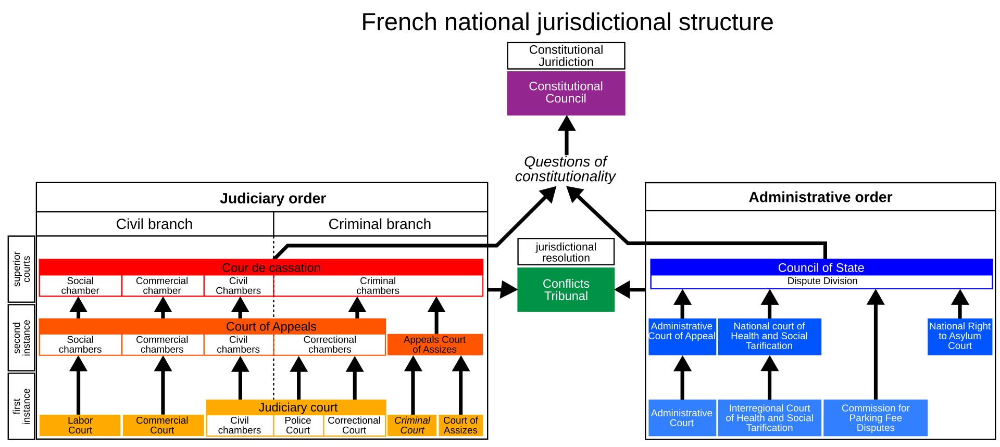

Judicial Hierarchy and Organization
Week 7
Assessment
regular deadline: 29 April 2025
what theory do you want to contribute to with your empirical analysis?
- derive a specific hypothesis from theoretical discussion
what data are you going to use to test your hypothesis?
what method are you going to use to analyse your data?
come to office hours after 2nd seminar if you want to chat about your paper idea
Empirical paper
Introduction: what is the research puzzle/problem and why is it important?
Literature review: what we already know about the problem from previous research and what gap is going to be addressed by your paper
- examples of a gap: all evidence comes from a single jurisdiction; there is conflicting evidence; existing theories do not account for an important variable; etc.
Theory: a reasoned justification of your principal expectation (hypothesis) prior to conducting the empirical analysis; must be informed by existing literature
what puzzle does your theory attempt to explain?
example of a hypothesis: “The likelihood of [Supreme Court] review should initially decrease and then increase in ideological distance [from the lower court].”
what is your explanatory (independent) variable? What is your outcome (dependent) variable?
Empirical paper
Data: information used to produce evidence and test your hypothesis
which cases will offer leverage on your research problem?
how do you operationalize your theory (variables) in data? What is the unit of analysis?
what measurement choices were made in the construction of the dataset?
you can use an existing dataset or collect your own data
even in qualitative research keep meticulous track of your sources
Methods/research design: the empirical strategy applied to your data in order to test your hypothesis
how do you analyse your data?
what valid inferences can be made based on your method? e.g. average treatment effects vs mechanistic evidence
what are the assumptions and limitations of the method?
Empirical paper
Findings and discussion: the results produced by your empirical strategy and data
what are the results of your analysis?
what are the implications for your hypothesis? is there evidence in support or against it?
what are the implications for the broader theory and literature?
what have we learned that we did not know before?
Conclusion: summarize findings, highlight main contribution and limitations, and offer thoughts on policy and future research avenues
Organizing the judiciary
how are judiciaries organized?
what are the implications of organizational principles for judicial decision-making?
Judicial hierarchy
virtually all judiciaries around the world are organized hierarchically
three “layers” are typical
supreme and constitutional (peak) courts at the top
courts of appeal in the middle
ordinary (lower) courts at the bottom
Judicial hierarchy
peak courts = courts of final instance
no more appeals possible
of special significance in some jurisdictions (e.g. ECtHR)
in many systems there are multiple hierarchies
- e.g. military courts or administrative law (France)
Judicial hierarchy
Judicial hierarchy
in some circumstances, judicial hierarchies are not universally accepted
in the EU, the CJEU proclaims the doctrine of supremacy of EU law over national law and its own role as the ultimate arbiter of EU law questions
from the CJEU’s perspective, all national courts must follow its lead
not all national courts accept that the CJEU sits atop the EU law hierarchy
Judicial hierarchy
The Court of Justice of the European Union exceeds its judicial mandate, as determined by the functions conferred upon it in Article 19(1) second sentence of the Treaty on European Union, where an interpretation of the Treaties is not comprehensible and must thus be considered arbitrary from an objective perspective. If the Court of Justice of the European Union crosses that limit, its decisions are no longer covered by Article 19(1) second sentence of the Treaty on European Union in conjunction with the domestic Act of Approval; at least in relation to Germany, these decisions lack the minimum of democratic legitimation necessary under Article 23(1) second sentence in conjunction with Article 20(1) and (2) and Article 79(3) of the Basic Law.
German Constitutional Court, Judgment of the Second Senate of 5 May 2020, press release
Judicial hierarchy
judges at different levels of the pyramid face different pressures and incentives
at the bottom, the range of goals is the widest (e.g. routines, workload, promotion, policy)
at the top, judges are mostly concerned with policy considerations and ideological influence is therefore the strongest (Zorn and Bowie 2010)
Judicial discipline
discipline in the judicial hierarchy is maintained through two mechanisms:
precedents or rules created by higher courts to be followed by lower courts
oversight by higher courts or the threat of reversing lower court decisions
Role of precedent
even jurisdictions which do not formally subscribe to stare decisis usually employ precedents
precedents transmit rules through time and the judicial hierarchy
courts higher in the hierarchy and later in time can amend or expunge lower or previous precedents
Role of lower courts
in the standard account, lower courts implement the doctrines developed by peak courts
they may try to make use of ambiguity to create room for their own preferences (Cameron, Segal, and Songer 2000)
upper courts correct their “errors”
in the ‘reversed’ account, lower courts make their own doctrines (Carrubba and Clark 2012)
they have a first-mover advantage and are closer to case facts
upper courts intervene when lower courts go too far
The cost of review
upper courts do not have direct and immediate access to case facts, only to lower courts’ decisions
they need to spend time and resources to find out more
=> upper courts need to decide which decisions are worth auditing
upper courts care about lower courts’ dispositions and rules
- lower courts choose rules to avoid review (Carrubba and Clark 2012)
The threat of reversal
why do lower courts follow precedent? why do they fear reversal?
reputation
belief in legal principles (Cross 2005)
they want to have influence over the law (Carrubba and Clark 2012)
interpersonal contacts between lower and appeal judges dampen the effect of ideological distance (Nelson, Hazelton, and Hinkle 2022)
- when the lower and appeal judges work in the same courthouse, ideological distance becomes irrelevant
The threat of reversal
appeal courts pick up on signals (“fire alarms” / whistleblowing) about whether a decision is worth reviewing
litigants filing appeals
interest groups filing amici curiae briefs
lower court judges dissenting (Beim, Hirsch, and Kastellec 2014)
Collegial courts
most important courts are collegial – they involve bargaining between multiple judges
if opinion amendments by judges are costless, the result will align with the median judge’s preferences
- if they are not, the opinion writer can pull the judgment slightly away from the median judge
Collegial courts
judges are affected by the ideology, gender and race of the judges they co-decide with (Kastellec 2013)
judges’ mutual familiarity fosters openness and more extensive deliberation (Swalve 2022)
Role of chambers
to increase efficiency, courts can create chambers consisting of sub-groups of judges
their composition can be more or less permanent and stable
but they undermine the court’s consistency in applying rules (Fjelstul 2023)
Case assignment
who decides who decides?
in some courts (e.g. CJEU), the president chooses the opinion writer (judge-rapporteur)
a source of power to steer decisions in a desired direction
at SCOTUS, the initial majority also gets the pen-holder (Lax and Cameron 2007)
automatic systems of random case assignment as an anti-corruption measure (Marcondes, Peixoto, and Stern 2019)
Role of clerks
judges do not work alone – they are assisted by law clerks
- their influence can be considerable and their selection is not random (Badas, Sanders, and Stauffer 2024)
judges, similar to politicians have different styles
- some are more willing to trust and delegate work than others
References

POLS0113: Judicial Politics